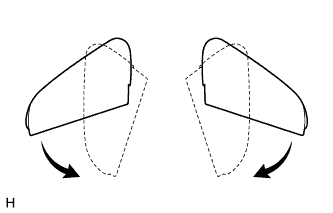
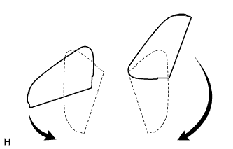
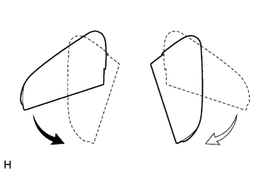
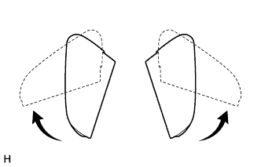
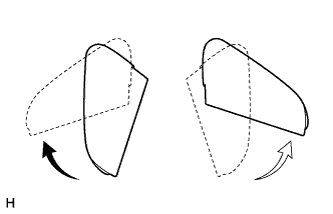
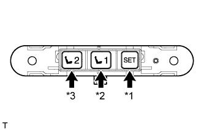
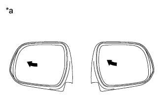
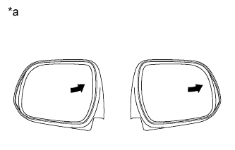
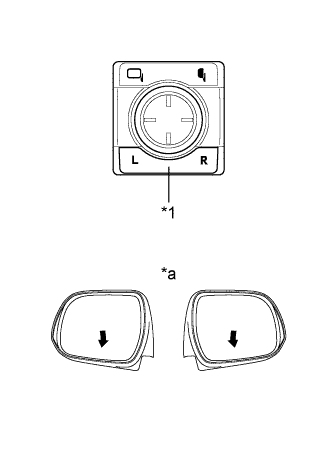

POWER MIRROR CONTROL SYSTEM > OPERATION CHECK |
| CHECK REMOTE CONTROL MIRROR FUNCTION |
Turn the engine switch on (ACC).
With the mirror select switch set to L, check that the mirror surface moves up, down, left and right normally.
With the mirror select switch set to R, check that the mirror surface moves up, down, left and right normally.
| CHECK POWER RETRACTABLE MIRROR FUNCTION |
Turn the engine switch on (ACC).
At each outer rear view mirror position, check the retractable mirror operation when operating the outer mirror retract switch.
|  |
Move the mirrors to the driving position.
Turn the outer mirror retract switch to the retract position.
Check that the right and left outer rear view mirrors move from the driving position to the retracted position.
|  |
Move the mirrors to the driving position.
Move one of the outer rear view mirrors to the forward position by hand.
Turn the outer mirror retract switch to the retract position.
Check that the outer rear view mirror in the forward position moves to the retracted position, and check that the other mirror moves to the retracted position.
|  |
Move the outer rear view mirrors to driving position.
Move one of the outer rear view mirrors to the retracted position by hand.
Turn the outer mirror retract switch to the retract position.
Check that the outer rear view mirror in the driving position moves to the retracted position.
|  |
Move the mirrors to the retracted position.
Turn the outer mirror retract switch to the driving position.
Check that the right and left mirrors move from the retracted position to the driving position.
|  |
Move the mirrors to the retracted position.
Move one of the outer rear view mirrors to the driving position by hand.
Turn the outer mirror retract switch to the driving position.
Check that the retracted outer rear view mirror moves to the driving position.
Check the operation of the outer rear view mirror according to retract switch operations and engine switch condition.
When the outer rear view mirror is operating, turn the engine switch off and check that the mirror operation stops immediately.
This time, turn the engine switch on (ACC) and press the retract switch. Check that the outer rear view mirror operates in the opposite direction.
Check the operation of the outer rear view mirror when it is blocked by an obstacle.
When the outer rear view mirror is moving to the retracted or driving position, block the outer rear view mirror by hand. Check that the mirror stops moving.
With the outer rear view mirror stopped partway, push the retract switch. Check that the outer rear view mirror moves in the opposite direction.
| CHECK MIRROR HEATER FUNCTION |
Turn the engine switch on (IG).
Check that pressing the mirror heater switch illuminates the indicator and warms the mirror surface.
Check that after approximately 15 minutes, the indicator light turns off and the mirror heater deactivates.
| CHECK MEMORY AND MIRROR RESTORING OPERATION |
|  |
| *1 | SET switch |
| *2 | M1 Switch |
| *3 | M2 Switch |
Turn the engine switch on (IG) and move the shift lever to P.
Check the M1 switch.
|  |
Using the mirror adjust switch assembly, turn the mirror surface to the full left position.
| *a | Turn to Left Fully |
Check that the buzzer sounds for 0.5 seconds and the seat position is memorized when the M1 switch is pressed within 3 seconds after the SET switch is being pressed.
Using the outer mirror switch assembly, turn the mirror surface to the full right position.
Press the M1 switch.
Check that the buzzer sounds for 0.1 seconds and the outer mirror automatically moves to the recorded full left position.
Check the M2 switch.
|  |
Using the mirror adjust switch assembly, turn the mirror surface to the full right position.
| *a | Turn to Right Fully |
Check that the buzzer sounds for 0.5 seconds and the seat position is memorized when the M2 switch is pressed within 3 seconds after the SET switch is being pressed.
Using the outer mirror switch assembly, turn the mirror surface to the full left position.
Press the M2 switch.
Check that the buzzer sounds for 0.1 seconds and the outer mirror automatically moves to the recorded full right position.
| CHECK REVERSE SHIFT-LINKED OPERATION OF MIRRORS |
|  |
Turn the engine switch on (IG).
| *1 | Mirror Select Switch |
| *a | Downward |
Set the mirror select switch to L or R.
Check that the mirror surface turns downward when the shift lever is moved to R.
Check that the mirror surface position returns to the original position when one of the following conditions is met:
| CHECK MEMORY CALL FUNCTION |
Memory call function check.
With a transmitter key recognition code registered:
With the recognition code of the transmitter registered in memory, perform an entry unlock or wireless unlock operation. Open the driver door and check that the front seat, steering wheel (tilt & telescopic) and outer mirror surface position automatically move to the positions recorded in memory.
Memory registration.
Prepare by recording the driving position through the memory switch (M1 or M2).
With the engine switch on (IG), press and hold both of the following: a memory switch (M1 or M2) and manual door control switch LOCK or UNLOCK. Continue holding the switches until the answer-back buzzer sounds once (0.5 seconds).
Memory erasure.
With the engine switch on (IG), press and hold both of the following: the memory SET switch and manual door control switch LOCK or UNLOCK. Continue holding the switches until the answer-back buzzer sounds twice (0.1 seconds each time).
| CHECK MEMORY CALL EMERGENCY STOP FUNCTION |
While a memory call function is operating, check that any one of the following actions will stop the memory call operation: 1) pressing the SET, M1 or M2 switch, 2) moving the shift lever to R, 3) moving the mirror surface manually, or 4) moving the mirror surface to the uppermost, lowermost, leftmost or rightmost position.